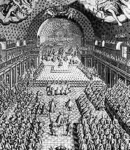

1658
• MOLIÈRE
La troupe est à nouveau à Lyon, puis à Grenoble, pour le carnaval.
19 mai : En route vers Paris, la troupe s'arrête à Rouen, où Corneille adresse à Marquise Du Parc des vers galants. La troupe joue au jeu de paume des Braques.
Octobre : Arrivée à la capitale, la troupe se met sous la protection de Monsieur, frère du roi. Le 24, elle joue, dans la salle des gardes du Vieux-Louvre, devant le roi et la cour, Nicomède, ainsi qu'une farce, Le Docteur amoureux. En récompense, le roi accorde à Molière la salle du Petit-Bourbon, les jours extraordinaires, en alternance avec les Italiens.
2 novembre : La troupe remporte un vif succès avec L'Étourdi, puis avec Le Dépit amoureux.
• VIE THÉÂTRALE ET LITTÉRAIRE
La Fontaine, Le Songe de Vaux.
• POLITIQUE ET SOCIÉTÉ
Soulèvement des sabotiers de Sologne.
Turenne bat Condé et les troupes espagnoles à la bataille des Dunes.
• ARTS, SCIENCES ET RELIGION
Vermeer peint sa Vue de Delft.
